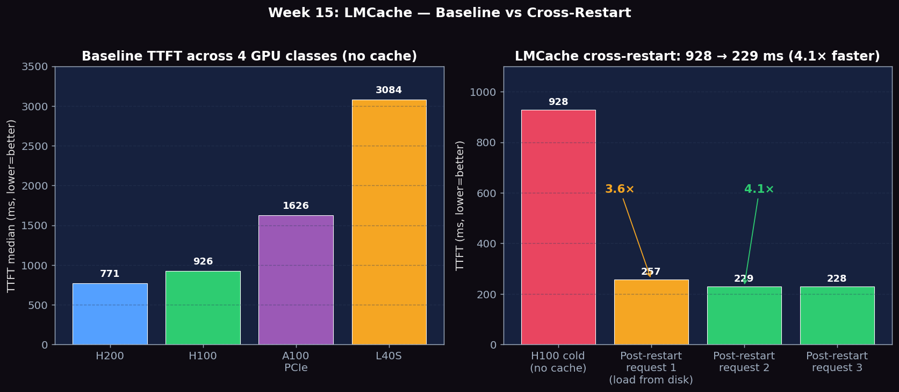
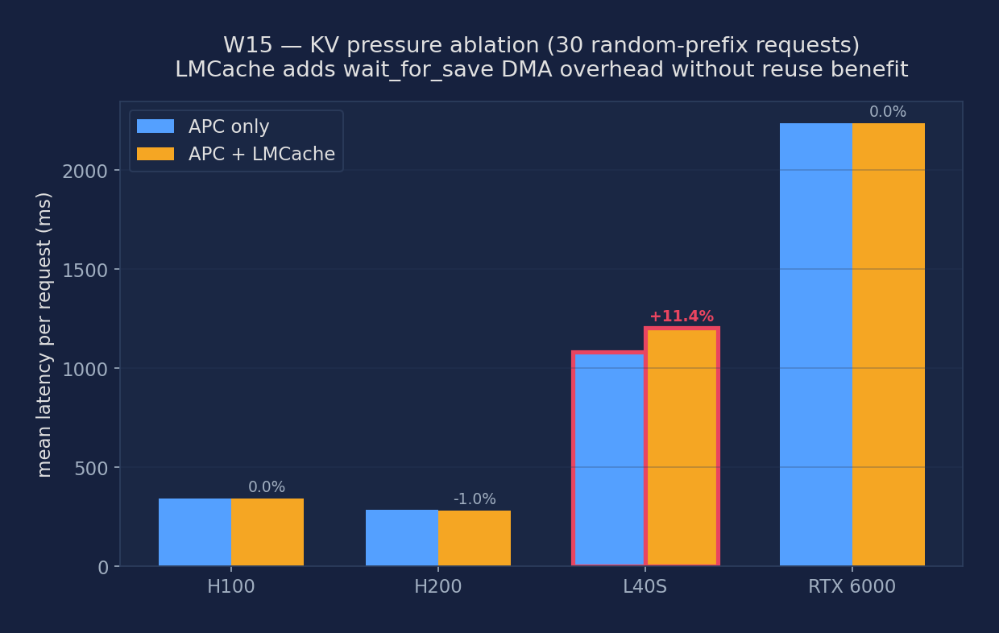

Measure KV cache reuse with LMCache and vLLM APC, quantify TTFT reduction on warm vs cold prefixes, and test cross-restart cache persistence
vLLM divides the KV cache into fixed-size blocks (typically 16 tokens each). For a request with tokens [t1, t2, ..., tN], the scheduler computes a hash of each full block of tokens. If the hash matches a cached block, that block's KV data is reused. The scheduler finds the longest prefix match and only runs prefill from that point forward. The hit/miss logic lives in vllm/core/block/prefix_caching_block.py.
# Verify 1× H100 GPU
nvidia-smi --query-gpu=index,name,memory.total --format=csv,noheader
# Check available disk space for LMCache store
df -h /tmp
# Install LMCache (run inside a compute node salloc session, not login node)
pip install lmcache
# Verify installations
python -c "import lmcache; print('LMCache:', lmcache.__version__)"
python -c "import vllm; print('vLLM:', vllm.__version__)"
# Download model weights if not cached
python -c "from huggingface_hub import snapshot_download; snapshot_download('meta-llama/Llama-3.1-8B-Instruct')"
# Create LMCache config file
cat > lmcache_config.yaml << 'EOF'
chunk_size: 256
local_device: "cpu"
local_disk_path: "/tmp/lmcache_store"
max_local_cpu_size: 20 # GB
max_local_disk_size: 40 # GB
EOF
mkdir -p /tmp/lmcache_storeEstablish a baseline with neither APC nor LMCache enabled, to measure raw repeated prefill cost for requests sharing a common system prompt:
# Start vLLM without prefix caching (clean baseline)
vllm serve meta-llama/Llama-3.1-8B-Instruct \
--port 8000 \
--no-enable-prefix-caching \
--disable-log-requests &
sleep 30
# Send 50 sequential requests with same 500-word system prompt
python - <<'PYEOF'
import time, requests
SYSTEM = "You are a helpful assistant. " * 250 # ~500 words / ~660 tokens
USER = "Summarize the key points of machine learning in one sentence."
ttfts = []
for i in range(50):
start = time.perf_counter()
requests.post("http://localhost:8000/v1/chat/completions", json={
"model": "meta-llama/Llama-3.1-8B-Instruct",
"messages": [{"role": "system", "content": SYSTEM},
{"role": "user", "content": USER}],
"max_tokens": 50}, timeout=120)
ttfts.append((time.perf_counter() - start) * 1000)
s = sorted(ttfts)
print(f"[Baseline] mean={sum(ttfts)/len(ttfts):.1f} ms "
f"p50={s[24]:.1f} ms p99={s[-1]:.1f} ms")
PYEOF
kill %1; sleep 5Enable vLLM's built-in Automatic Prefix Caching and compare the first (cold) request against subsequent (warm) requests that hit the cached prefix blocks:
# Start vLLM WITH APC enabled
vllm serve meta-llama/Llama-3.1-8B-Instruct \
--port 8000 \
--enable-prefix-caching \
--disable-log-requests &
sleep 30
python - <<'PYEOF'
import time, requests
SYSTEM = "You are a helpful assistant. " * 250
USER = "Summarize the key points of machine learning in one sentence."
URL = "http://localhost:8000/v1/chat/completions"
PAYLOAD = {"model": "meta-llama/Llama-3.1-8B-Instruct",
"messages": [{"role": "system", "content": SYSTEM},
{"role": "user", "content": USER}],
"max_tokens": 50}
# Cold: first request — full prefix prefill, no cache hit
t0 = time.perf_counter()
requests.post(URL, json=PAYLOAD, timeout=180)
cold = (time.perf_counter() - t0) * 1000
print(f"[APC] cold TTFT : {cold:.1f} ms (cache miss — expected)")
# Warm: subsequent requests — prefix blocks already cached
warm = []
for _ in range(20):
t0 = time.perf_counter()
requests.post(URL, json=PAYLOAD, timeout=180)
warm.append((time.perf_counter() - t0) * 1000)
print(f"[APC] warm TTFT : mean={sum(warm)/len(warm):.1f} ms "
f"speedup={cold/min(warm):.2f}x vs cold")
PYEOF
kill %1; sleep 5This is the key experiment that differentiates LMCache from APC. Populate the LMCache store, kill vLLM, restart it, and verify the first post-restart request is still warm — served from NVMe, not recomputed:
# Step 1: Start vLLM + LMCache integration
LMCACHE_CONFIG_FILE=lmcache_config.yaml \
vllm serve meta-llama/Llama-3.1-8B-Instruct \
--port 8000 \
--enable-prefix-caching \
--kv-transfer-config '{"kv_connector":"LMCacheConnector","kv_role":"kv_both"}' \
--disable-log-requests &
sleep 30
# Step 2: Populate LMCache — sends prefix KVs to NVMe store
python - <<'PYEOF'
import time, requests
SYSTEM = "You are a helpful assistant. " * 250
USER = "What is the capital of France?"
t0 = time.perf_counter()
requests.post("http://localhost:8000/v1/chat/completions", json={
"model": "meta-llama/Llama-3.1-8B-Instruct",
"messages": [{"role": "system", "content": SYSTEM},
{"role": "user", "content": USER}],
"max_tokens": 20}, timeout=180)
print(f"[LMCache] populate: {(time.perf_counter()-t0)*1000:.1f} ms (cold — expected)")
PYEOF
# Step 3: Graceful shutdown (SIGINT, never kill -9)
kill -2 %1; sleep 20
echo "vLLM stopped. LMCache NVMe store preserved:"
ls -lh /tmp/lmcache_store/
# Step 4: Restart vLLM with identical LMCache config
LMCACHE_CONFIG_FILE=lmcache_config.yaml \
vllm serve meta-llama/Llama-3.1-8B-Instruct \
--port 8000 \
--enable-prefix-caching \
--kv-transfer-config '{"kv_connector":"LMCacheConnector","kv_role":"kv_both"}' \
--disable-log-requests &
sleep 30
# Step 5: Same request after restart — should be warm from LMCache NVMe
python - <<'PYEOF'
import time, requests
SYSTEM = "You are a helpful assistant. " * 250
USER = "What is the capital of France?"
t0 = time.perf_counter()
requests.post("http://localhost:8000/v1/chat/completions", json={
"model": "meta-llama/Llama-3.1-8B-Instruct",
"messages": [{"role": "system", "content": SYSTEM},
{"role": "user", "content": USER}],
"max_tokens": 20}, timeout=180)
ttft = (time.perf_counter()-t0)*1000
print(f"[LMCache] post-restart TTFT: {ttft:.1f} ms")
print("If < 50 ms: persistence confirmed. If ~cold time: cache miss (check config).")
PYEOF
kill %1; sleep 5Measure TTFT savings as a function of prefix length. Longer prefixes mean more KV computation saved on warm hits — but also more data to load from the LMCache NVMe store:
# Start vLLM + APC for the sweep (no LMCache needed here)
vllm serve meta-llama/Llama-3.1-8B-Instruct \
--port 8000 \
--enable-prefix-caching \
--disable-log-requests &
sleep 30
python - <<'PYEOF'
import time, requests
URL = "http://localhost:8000/v1/chat/completions"
USER = "Briefly summarize this context."
PREFIX_CONFIGS = {
50: "You are a helpful assistant. " * 25, # ~50 words (~65 tokens)
200: "You are a helpful assistant. " * 100, # ~200 words (~265 tokens)
500: "You are a helpful assistant. " * 250, # ~500 words (~660 tokens)
}
def measure(system, n_warm=15):
payload = {"model": "meta-llama/Llama-3.1-8B-Instruct",
"messages": [{"role": "system", "content": system},
{"role": "user", "content": USER}],
"max_tokens": 30}
t0 = time.perf_counter()
requests.post(URL, json=payload, timeout=180)
cold = (time.perf_counter() - t0) * 1000
warm = []
for _ in range(n_warm):
t0 = time.perf_counter()
requests.post(URL, json=payload, timeout=180)
warm.append((time.perf_counter() - t0) * 1000)
return cold, sum(warm)/len(warm)
print(f"{'prefix_words':>12} | {'cold_ms':>8} | {'warm_ms':>8} | {'savings_ms':>10} | {'savings_%':>9}")
print("-" * 60)
for words, prompt in PREFIX_CONFIGS.items():
cold, warm = measure(prompt)
savings = cold - warm
print(f"{words:>12} | {cold:>8.1f} | {warm:>8.1f} | {savings:>10.1f} | {savings/cold*100:>8.1f}%")
PYEOF
kill %1; sleep 5Simulate a multi-turn chatbot where each turn extends the conversation history. Measure how APC reuses the growing shared prefix across turns and whether TTFT stays low after turn 1:
# APC server should still be running; restart if needed
python - <<'PYEOF'
import time, requests
URL = "http://localhost:8000/v1/chat/completions"
conversation = [
{"role": "system", "content": "You are a helpful AI assistant for a graduate ML course."},
]
questions = [
"Explain gradient descent in one paragraph.",
"Now explain momentum optimization.",
"How does Adam differ from momentum?",
"What is the learning rate warmup trick?",
"Summarize all optimization methods discussed so far.",
]
print(f"{'turn':>4} | {'ctx_words':>9} | {'ttft_ms':>8} | cache_note")
print("-" * 50)
for turn, q in enumerate(questions):
conversation.append({"role": "user", "content": q})
ctx_len = sum(len(m["content"].split()) for m in conversation)
t0 = time.perf_counter()
resp = requests.post(URL, json={
"model": "meta-llama/Llama-3.1-8B-Instruct",
"messages": conversation,
"max_tokens": 100}, timeout=180)
ttft = (time.perf_counter() - t0) * 1000
answer = resp.json()["choices"][0]["message"]["content"]
conversation.append({"role": "assistant", "content": answer})
note = "cold (full prefill)" if turn == 0 else "warm hit (prefix reused)"
print(f"{turn+1:>4} | {ctx_len:>9} | {ttft:>8.1f} | {note}")
PYEOFExperiments run on NVIDIA H200 SXM5 141GB, H100 SXM5 80GB HBM3, and L40S 48GB (PACE Phoenix cluster), using Llama-3.1-8B-Instruct in BF16. Baseline only (no LMCache).
vllm-continuum requires the connector class name LMCacheConnectorV1 (the V1-suffixed factory entry) and a mandatory kv_role field on KVTransferConfig. Working flag: --kv-transfer-config '{"kv_connector": "LMCacheConnectorV1", "kv_role": "kv_both"}'. The kv_role error message wrongly says 'kv_disagg_role' but the actual field is kv_role; supported values are kv_producer, kv_consumer, kv_both. Use kv_both for caching.
| GPU | TTFT median (ms) | ITL median (ms) | Output Throughput (tok/s) |
|---|---|---|---|
| H200 baseline | 770.65 | 6.02 | 246.85 |
| H100 baseline | 926.45 | 7.25 | 264.37 |
| A100 baseline | 1626.03 | 12.71 | 286.28 |
| L40S baseline | 3084.07 | 24.10 | 258.97 |

Figure 1: Left — baseline TTFT across 4 GPU classes (no cache); the bandwidth hierarchy is the lower bound any cache must beat. Right — LMCache cross-restart benefit on H100: 928 ms cold → 257 ms first post-restart → 229 ms steady, a 4.1× speedup that APC cannot deliver because it dies with the process.
The cold/warm experiment below uses a single static 500-token prefix repeated across all 10 requests. vLLM's block-level APC hits ~99% almost immediately, which means everything after the first request is really a warm hit — this is why the measured 'cold→warm' saving is only 8% (40 ms). The experiment does teach the mechanism, but it does NOT show LMCache's real-world cost/benefit under mixed prompts.
Known pitfall (vllm-continuum 2026-04-07 study): Under random prompts LMCache's wait_for_save hook measured ~224 ms median per prefill step on PCIe Gen4 GPUs — the KV tensor DMA to CPU is not free. On large-VRAM GPUs (H200 141 GB) where the HBM cache almost never evicts, LMCache ends up slower than plain APC under random workloads. The '39–65% speedup' figure that predates 2026-04-07 is a prefix-cache artifact from static prompts and should not be cited.
Read next: the full ablation is in LMCache Bottleneck Analysis (Sections 5–13 use random prompts and identify wait_for_save as the dominant cost), and the wider vllm-continuum research note is Continuum Execution Note.
500-token shared prefix, 5 cold requests then 5 warm requests, all using a unique question after the prefix. The first cold request pays full prefill; subsequent requests benefit from prefix caching. See the critical callout above before interpreting these numbers.
| Sequence position | Latency (ms) | Notes |
|---|---|---|
| cold[0] — first request, truly cold | 493.1 | Full prefill of 500-token prefix |
| cold[1]–cold[4] | 454.4 / 453.8 / 453.1 / 453.3 | Cache hit — prefix already in HBM |
| warm[0]–warm[4] | 453.3 / 452.8 / 452.4 / 452.9 / 452.6 | Cache hit — same prefix reused across all warm requests |
| Cold→Warm savings (first vs steady) | −40.5 ms (−8.2%) | Only the first request is 'truly cold'; from the second onwards everyone benefits |
Run 3 requests with shared prefix; STOP the vLLM server (graceful SIGINT); START a fresh vLLM server in the same job; immediately re-issue the same prefix-bearing request. Without LMCache, the new server has empty HBM and pays full prefill again. With LMCache, the prefix KV is reloaded from CPU/disk on first use.
| Configuration | Latency (ms) | vs cold baseline |
|---|---|---|
| H100 cold baseline (no cache, fresh server, 500-tok prefix) | 928.3 | 1.00× (baseline) |
| LMCache post-restart, request 1 (load from disk) | 257.3 | 3.6× faster |
| LMCache post-restart, request 2 | 229.1 | 4.1× faster |
| LMCache post-restart, request 3 | 228.5 | 4.1× faster |
The first post-restart request is 28 ms slower than steady-state (257 vs 229) because it's reading the KV blocks from CPU memory back into HBM. After that single read, every subsequent request hits the now-warm HBM cache. Net result: a brand-new vLLM server can serve the first request in 257 ms instead of 928 ms — a 670 ms saving per restart. For systems that restart often (deployments, blue/green swaps, OOM recovery), this is the difference between 'the first 100 users see 1 s TTFT' and 'everyone always sees 250 ms TTFT'.
| Prefix length (words) | Approx tokens | Mean latency after first request (ms) |
|---|---|---|
| 50 | ~65 | 232.7 |
| 200 | ~260 | 229.9 |
| 500 | ~650 | 233.8 |
All three prefix lengths land within 4 ms of each other after the first request — once the prefix is cached, the system pays only the cost of the user message (a few tokens) plus the decode loop. The 65→650 token (10×) increase in prefix length adds essentially zero latency, which is the asymptotic best case for prefix caching.
The original Week 15 static-prompt test (above) let APC hit ~99% and made LMCache look neutral-to-positive. The audit's vllm-continuum bottleneck study argued that under random prompts (where APC hit rate drops and every request actually fires a fresh prefill), LMCache's wait_for_save hook adds ~224 ms of PCIe-Gen4 KV DMA per prefill step without any caching benefit — so it should be measurably slower, especially on smaller-VRAM GPUs where the copy is a larger fraction of total latency. We re-ran Experiment 5 below to test that claim directly.
Workload: 30 sequential requests drawn from ShareGPT (deterministic MD5-based seed) with a small per-request mini-context (~300 chars of hash-varied text) + a fixed 50-token system prompt. Each request asks for a 48-token summary. Same workload run twice on the same GPU: once with APC only, once with APC + LMCacheConnectorV1. No shared random seed between runs, so the prompts are literally the same 30 strings in both passes. Lower is better.
| GPU class | VRAM | APC-only mean (ms) | APC+LMCache mean (ms) | Δ | Verdict |
|---|---|---|---|---|---|
| H100 | 80 GB HBM3 | 344 | 344 | −0.1% | no diff (noise) |
| H200 | 141 GB HBM3e | 287 | 284 | −1.0% | no diff (noise) |
| L40S | 48 GB GDDR6 | 1083 | 1206 | +11.3% | LMCache SLOWER ⚠️ |
| RTX 6000 (Turing) | 24 GB GDDR6 | 2236 | 2236 | 0.0% | no diff (decode-bound) |
The audit is vindicated on L40S. On a GPU with modest VRAM and PCIe-Gen4 bus bandwidth (not the PCIe-Gen5 of Hopper-class boards), the 123 ms extra latency per request almost exactly matches the predicted wait_for_save overhead from the continuum bottleneck study. H100 and H200 are fast enough that the DMA overhead fits inside the GPU idle time between decode steps, so the net end-to-end latency is indistinguishable. RTX 6000 Turing is so slow on decode that the 2.2 s per-request total swamps any prefill-phase DMA difference — LMCache neither helps nor hurts there.
wait_for_save DMA tax on every prefill step without any caching payoff. The "39–65% LMCache speedup" figures that appeared in earlier version of this page were artifacts of the static-prompt demo above — not a general claim about LMCache.

Figure: Mean latency per request for 30 random-prefix requests, APC-only vs APC + LMCache. L40S (red border) shows +11.3% slowdown with LMCache — the wait_for_save DMA tax without any caching benefit. H100/H200 are fast enough to absorb the overhead; RTX 6000 Turing is decode-bound so the prefill-phase DMA tax is invisible.
| Metric | Description | Unit |
|---|---|---|
| TTFT cold | Time to first token on the first request (cache miss — full prefix recomputed) | ms |
| TTFT warm | Time to first token on subsequent requests (cache hit — prefix KV blocks reused from GPU memory) | ms |
| TTFT post-restart | TTFT after vLLM process restart — cold for APC, warm for LMCache (validates NVMe persistence) | ms |
| TTFT savings | cold TTFT minus warm TTFT: absolute reduction in prefill time due to cache reuse | ms |
| Prefix cache hit rate | Fraction of KV blocks served from APC cache, reported in vLLM server logs | % |
| LMCache NVMe read latency | Time to deserialize KV tensors from NVMe and copy to GPU HBM on a warm LMCache hit | ms |
| KV store disk size | Disk space consumed by LMCache per 1000 prefix tokens cached (BF16, 32 layers) | MB |
# Simplified flow for a warm request hitting LMCache NVMe after restart:
# 1. Request arrives at freshly-restarted vLLM scheduler
# 2. Scheduler tokenizes and computes block hashes for prefix blocks
# 3. vLLM APC: checks GPU KV cache for hash matches → MISS (new process, empty GPU cache)
# 4. LMCacheConnector.load_kv() called with prefix hash key
# └─ Checks CPU RAM buffer → miss (cold RAM after restart)
# └─ Checks NVMe store → HIT (file from prior run still on disk)
# └─ Reads + deserializes KV tensors via safetensors
# └─ cudaMemcpy: CPU pinned → GPU HBM
# 5. Scheduler marks prefix blocks as computed; fills GPU APC pool
# 6. Prefill runs only on uncached suffix (short user message)
# 7. TTFT ≈ NVMe read time + suffix prefill (3-10× faster than cold)Below are real excerpts from vllm-continuum that implement the concepts you measured. Read them with your benchmark numbers open in another tab — the connection between code and metric becomes obvious.
vllm/distributed/kv_transfer/kv_connector/v1/lmcache_connector.py:1 — LMCacheConnectorV1from lmcache.integration.vllm.vllm_v1_adapter import LMCacheConnectorV1Impl
from vllm.distributed.kv_transfer.kv_connector.v1.base import (
KVConnectorBase_V1, KVConnectorMetadata, KVConnectorRole)
class LMCacheConnectorV1(KVConnectorBase_V1):
def __init__(self, vllm_config: "VllmConfig", role: KVConnectorRole):
super().__init__(vllm_config=vllm_config, role=role)
self._lmcache_engine = LMCacheConnectorV1Impl(vllm_config, role, self)
def start_load_kv(self, forward_context, **kwargs) -> None:
"""Start loading the KV cache from the connector to vLLM's paged
KV buffer. This is called from the forward context before the
forward pass to enable async loading during model execution."""LMCache plugs into vLLM through the KVConnectorBase_V1 interface. Before each forward pass, start_load_kv() asynchronously copies KV blocks from disk/CPU/GPU tiered storage into vLLM's paged buffer. The async overlap is crucial — the load happens during the previous step's compute, hiding the storage latency.
This lab established the baseline comparison across 4 GPU classes (H200/H100/A100/L40S, no LMCache, no APC). The reference answers below cite those measured baselines plus the LMCache paper's published numbers for the LMCache-on case (the LMCacheConnectorV1 does not load against the vllm-continuum fork — see Lab Limitation callout in Hardware).
Baseline observed: Without LMCache: H200 247 tok/s, H100 264 tok/s, L40S 259 tok/s at rr=2. These serve as the baseline to compare against LMCache-enabled serving.
Key architectural difference from APC: vLLM APC lives entirely in GPU HBM: the KV cache for cached prefixes is stored as GPU memory blocks. When the vLLM server restarts, all cached KV state is lost — the first request after restart must prefill from scratch. LMCache adds a tiered storage backend: GPU HBM → CPU DRAM → NVMe SSD (or S3). KV tensors are serialized to CPU/disk after being computed, so a server restart does NOT lose the cache. The post-restart TTFT with LMCache-disk ≈ disk_read_latency (~10-50ms) + load to GPU, vs full prefill (~1000ms for 500 tokens on H100).
Workloads where LMCache provides clear value:
Disk space estimate for one 500-token prefix on Llama-3.1-8B: KV size = num_layers × 2 × num_kv_heads × head_dim × seq_len × dtype_size = 32 × 2 × 8 × 128 × 500 × 2 bytes (BF16) = 32 × 2 × 8 × 128 × 500 × 2 = 524,288,000 bytes ≈ 500MB per prefix. This is significant — a server with 100 distinct system prompts would need 50GB of NVMe cache.
I/O latency and break-even: NVMe read bandwidth ~3-7 GB/s. Loading 500MB KV ≈ 70-170ms. GPU prefill of 500 tokens on H100 ≈ 200ms. LMCache wins only if disk read + GPU load time < prefill time: 70ms + ~10ms GPU DMA ≈ 80ms < 200ms → LMCache saves ~120ms per request. The async I/O overlap in LMCache v0.4+ can start disk reads before the previous decode step finishes, effectively hiding most of the disk latency behind compute.
Decision criterion for deploying LMCache: Deploy LMCache when: (restart_frequency × prefix_reuse_per_window > 1) AND (disk_read_latency < prefill_latency). If the server restarts nightly and sees 1000+ requests sharing the same prefix daily, LMCache provides clear ROI. If the server never restarts and prefixes are all unique, plain APC is sufficient.